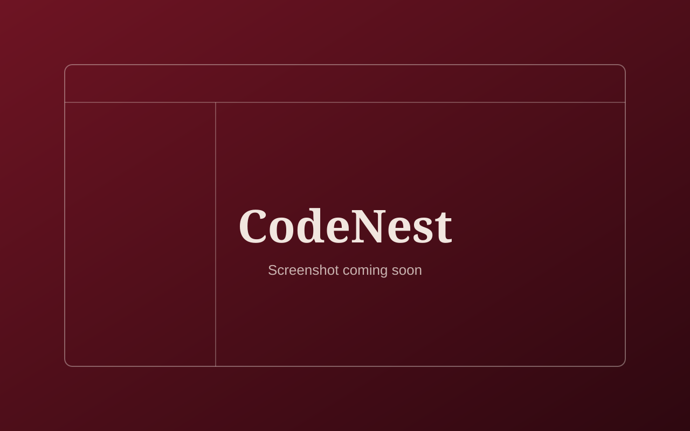

Case study
In progressCodeNest
A personal project: a browser-based coding workspace with a code editor, user accounts, saved projects and code execution through a backend. Still in development, and currently running locally.

Problem and motivation
Learning to program means moving between editors, compilers and saved files. CodeNest is my attempt to bring that workflow into one clean browser workspace, and a way for me to learn how the frontend, a backend and an external API fit together by building something I would actually use.
Goals
- Create a polished, user-friendly coding workspace in the browser.
- Support several languages from one editor.
- Let people keep their work as projects they can save and return to.
- Learn full-stack basics: a plain HTML, CSS and JavaScript frontend talking to a Node.js backend.
What is built so far
- Homepage: a language explorer with search and category filters, a light and dark theme that is remembered between visits, and a responsive mobile menu.
- Code editor: built on the Monaco editor (the editor engine behind VS Code), with multiple files, tabs, and creating, renaming and deleting files.
- Languages: a language switcher for C++, C, Python, Java, JavaScript, HTML and SQL, each with starter code.
- Running code: JavaScript runs in a sandboxed frame in the browser and HTML opens in a preview tab. For C, C++, Python, Java and SQL, the editor sends the code to my Node.js backend, which submits it to the public Judge0 API and returns the result to an output panel. A popup collects program input.
- Accounts: sign up and log in through the backend, with hashed passwords (bcrypt) and token-based sessions (JWT).
- Saving: auto-save and manual save to the browser, a history of recent projects, and saving projects to a logged-in account.
- Shortcuts: Ctrl+S to save and Ctrl+Enter to run.
- AI assistant panel: sends the current file and a question to a local Ollama model (Qwen2.5-Coder) through the backend. It only works on a machine that is running Ollama.
Planned
- Deploy the backend online so a public live demo can work.
- Move storage from simple JSON files to a proper database.
- Harden the backend: authentication on every endpoint and rate limiting.
- A hosted AI option that does not need a local model.
- Saved snippets, coding challenges and progress features.
Known limitations
- CodeNest currently runs on my own computer. There is no public live demo yet because the backend is not deployed.
- The AI assistant needs a local Ollama installation.
- SQL runs through Judge0 on SQLite, not MySQL.
- Code execution depends on the free public Judge0 service and its limits.
Tech stack
Screenshots
More screenshots, including the editor workspace, will be added here.
Development challenges
The hardest part has been project persistence and sessions: keeping a project’s identity consistent between local saves and account saves, so saving updates the same project instead of creating duplicates, and making recent projects and logout behave correctly.
Solutions attempted
- Every project gets its own unique ID, and the backend updates a project only when both the ID and the owning account match.
- The login token is kept in the browser and checked with the backend when the page loads, and logging out clears it.
- Recent projects are loaded from the account, so they are hidden once the user logs out.
Current status
In progress. The frontend and the local backend are working together, and I am still testing and debugging them.
Next steps
- Fix the remaining bugs found while testing.
- Add real screenshots and publish the source on GitHub.
- Deploy the backend and add a live demo link.